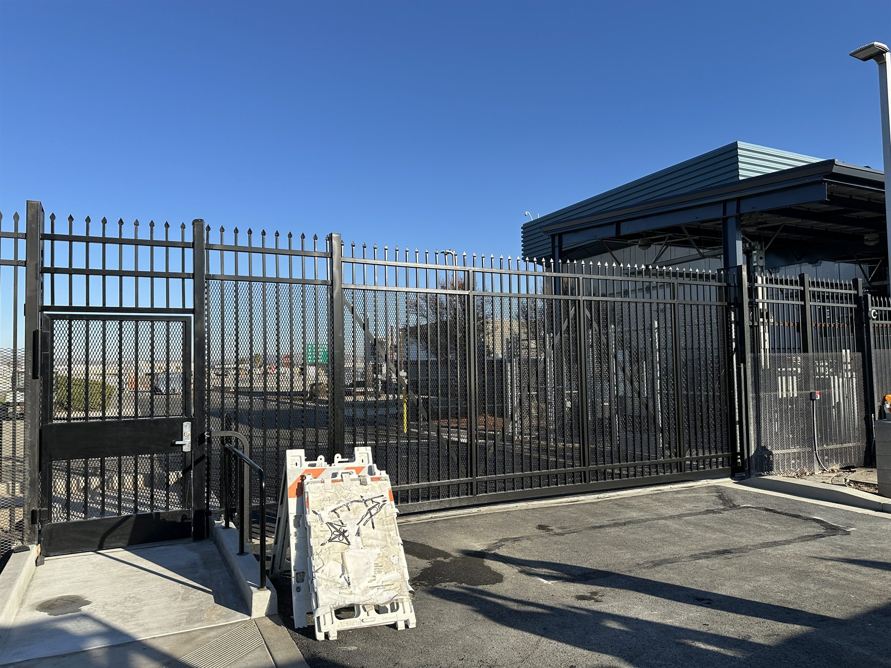
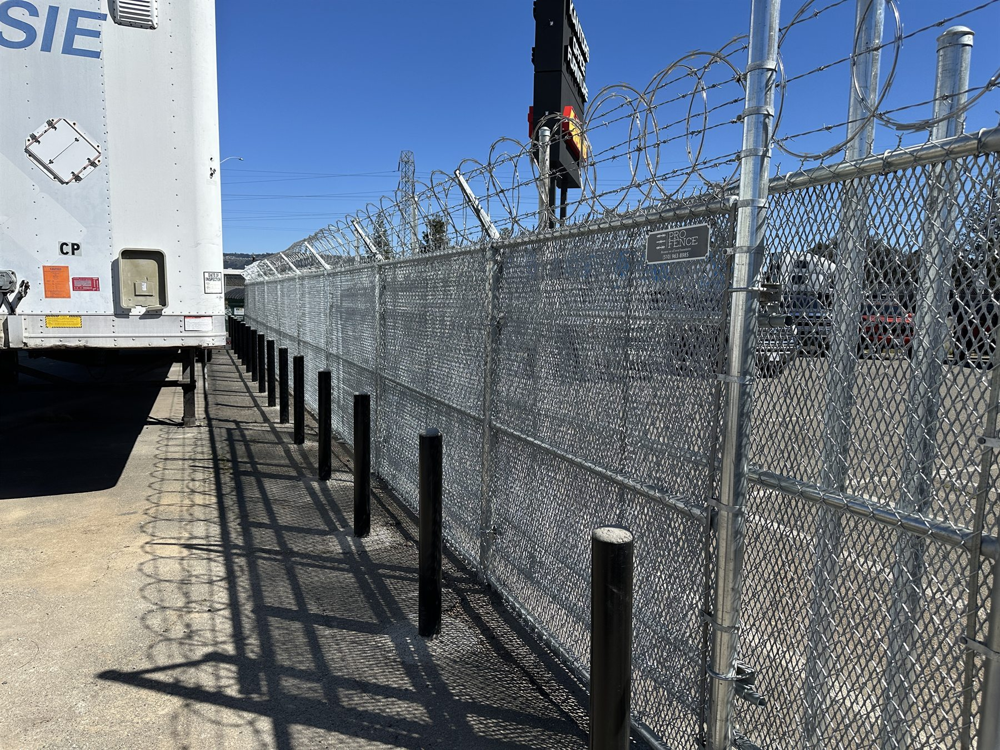
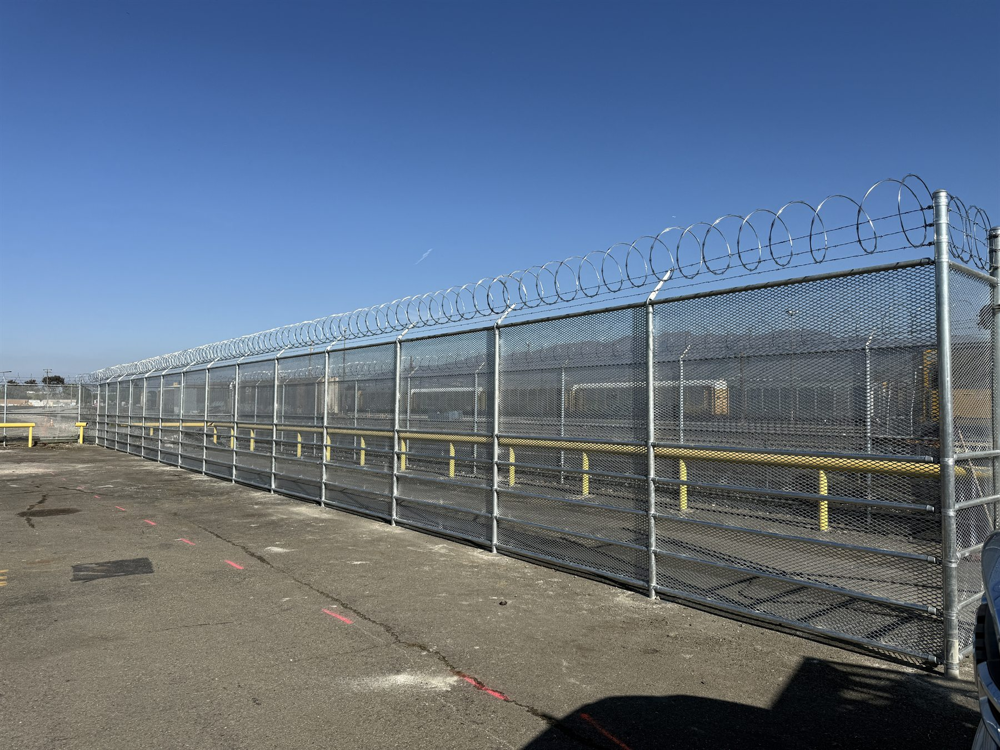

Automatic Gate Operators
Slide and swing gate operators for properties that need dependable vehicle entry and controlled daily access.
Hayward Gate Operator Installation
Because Pro Fence is based in Hayward, this is one of the strongest local pages for gate motor installation, automatic gate upgrades, loop detectors, badge readers, mag locks, and access control setups that need to work reliably every day.
Local Operator Work

Slide and swing gate operators for properties that need dependable vehicle entry and controlled daily access.

Badge readers, keypads, remotes, and mag locks for sites that need cleaner entry control without a clumsy setup.

Loop detectors, ground sensors, and monitored safety devices so the gate system behaves the way the property expects it to.
Why Hayward Clients Call
Some Hayward jobs are straightforward automatic driveway gate upgrades. Others are commercial entries, security-focused perimeters, or gate systems that need operator support details, readers, locks, and detection hardware all working together.
Because this is our home base, Hayward clients also get the benefit of a nearby contractor who can communicate clearly and move with local familiarity.
Good Fit Projects
Need Gate Motor Installation In Hayward?